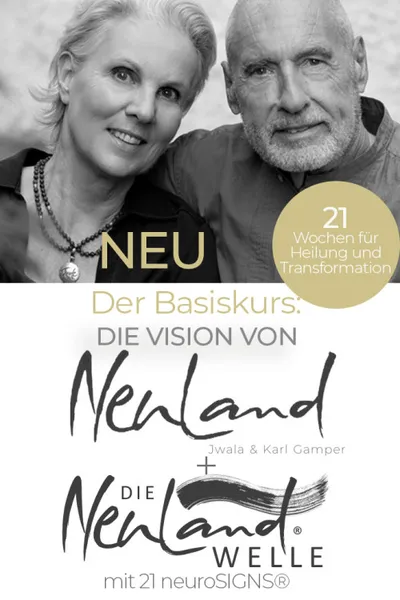

Die Vision von Neuland + Die NeuLand Welle
Produktprofil · Marktplatz-Daten 2026-10-13 · Verkaufsseiten-Recherche 2026-10-13 · Kategorien: Personal Development
- Die Vision von Neuland + Die NeuLand Welle ist ein/e Download in Personal Development, vertrieben über den Digistore24-Marktplatz von Anbieter jwalaundkarlgamper, gelistet seit 2020-04-16.
- Listenpreis $1306.02; Digistore24 meldet — Checkout-Konversion, — Stornierungsquote und 20 % Affiliate-Provision.
- Verdienst pro Verkauf (Affiliate): $261.20 (Anbieter-seitige Statistik, keine Prognose).
Interesse an Die Vision von Neuland + Die NeuLand Welle? Aktueller Preis, Boni und Garantiebedingungen finden Sie auf der offiziellen Seite des Anbieters:
Offizielle Verkaufsseite ansehen
Affiliate-Link (Werbung) — wir verdienen ggf. eine Provision, ohne Mehrkosten für Sie.

Marktplatz-Daten
| Produkttyp | Download |
|---|---|
| Preis | $1306.02 (Single payment) |
| Affiliate-Provision | 20 % |
| Garantie/Rückgabe | Laut Verkaufsseite des Anbieters — vor dem Kauf auf der offiziellen Seite prüfen |
| Anbieter | jwalaundkarlgamper (gelistet seit 2020-04-16) |
| Marktplatz-Statistiken* | Checkout-Konversion — · Stornoquote — · Verdienst/Verkauf $261.20 |
* Anbieter-seitige Statistiken von Digistore24; sie hängen von der Traffic-Qualität ab und sind keine Prognose.
Marktplatz-Beschreibung des Anbieters
<p>Die Vision von NeuLand + NEU: Die NeuLand-Welle</p> <p>- Ein Online-Kurs von Jwala und Karl Gamper -</p> <p>„<strong>SEI REALISTISCH. ERWARTE WUNDER!“</strong><br /><strong>DEIN QUANTENSPRUNG IN 21 PHASEN.</strong></p> <p> </p> <p>Dieser Kurs ist eine Liebeserklärung an dich selbst. Für deinen Körper. Und für deine Seele.</p> <p><br />Du gehst in ein Feld, nach dem du dich sehnst und weshalb du dieses Leben überhaupt angetreten bist: Es ist die Rückkehr zur Liebe. Und damit zur Fülle, zur Freude, zu innerem Frieden, zur Dankbarkeit und somit zu einem Leben, das ein gut gelebtes Leben ist.</p> <p>Während des Kurses wirst du in einem wirkmächtigen Ritual durch die Hochzeit von Körper und Seele geführt. Denn der Körper ist der sichtbare Aspekt der Seele und die Seele der unsichtbare Teil des Körpers. Diese werden wieder vereint. In dir erblüht ein paradiesisches Lebensgefühl. Du stärkst dein Geburtsrecht, aus der Seele zu leben. Du erlebst das wundervolle Wirken fließender Energie in deinem Alltag und den Zauber der Synchronizität. </p> <p>„Die Vision von NeuLand“ öffnet den Weg in dein ureigenes NeuLand und geht ihn mit dir Schritt für Schritt:</p> <p>„Die Vision von NeuLand“ begleitet dich durch mindestens 21 Wochen – mit 21 geschriebenen Lektionen und mit 21 neuroSIGNS® (Audiodateien in langen und kurzen Versionen), die du als NeuLand-Welle (Bewegungsmeditation) praktizieren kannst.</p> <p> </p> <p>Du machst diesen Kurs in Eigenregie; in deinem eigenen Tempo. Für dein gut gelebtes Leben.</p> <p> </p> <p>Die 21 Lektionen fügen sich - zusammen mit den neuroSIGNS® - in drei große Teilbereiche zu je 7 Phasen:</p> <p><br /><strong>Teil 1 – Heilung</strong><br />Dies sind die ersten sieben Phasen. Hier geht es um eine grundlegende, radikale Versöhnung, die fundamental befreit. Und damit heilt. Du feierst die Hochzeit von Körper und Seele. Du begegnest der Magie der Dankbarkeit und fusionierst mit den höheren Aspekten deines Bewusstseins.</p> <p> </p> <p><strong>Teil 2 – Transformation</strong><br />In diesen sieben Phasen formt sich deine innere Landschaft neu. Diese innere Transformation ist die Basis für den äußeren Wandel; der Boden für dein ureigenes NeuLand.</p> <p><br /><strong>Teil 3 – Manifestation</strong><br />Dein inneres NeuLand spiegelt sich in der äußeren Welt. Wie von Zauberhand wird das Wirken eines größeren Geistes spürbar. Und sichtbar. Du bist genährt, geschmeidig und gefestigt in deinem NeuLand angekommen. Alles fügt sich… Synchronizitäten werden dein höchstes Glück.</p> <p> </p> <p><strong>So geht’s: </strong></p> <p>(Eine ausführliche Anleitung und häufig gestellte Fragen findest du als pdf im Kurs)</p> <p>Jede der 21 Lektionen ist dicht geschrieben, gefüllt mit einer Reihe wirkmächtiger Übungen. Schenke dir genügend Zeit, damit sich das Neue in dir setzen und aus dir wirken kann.</p> <p>Daher empfehlen wir, dir für jede Lektion mindestens eine Woche einzuplanen, in denen du den Text liest und die schriftlichen Übungen dazu machst.</p> <p>Außerdem: Nimm dir jeden Tag Zeit, die NeuLand-Welle zu praktizieren. Bevorzugt am Abend. Am besten die lange Version mit ca. 20 Minuten.</p> <p>Nimm dir genügend Zeit, bis du die jeweilige Phase satt abgerundet hast und bereit bist für die nächste. Wenn du für eine Phase mehr Zeit brauchst: Schenke sie dir! Keine Eile weit und breit.</p> <p> </p> <p><strong>Während dieser 21 Phasen</strong> wird sich deine innere Landschaft vollkommen neu formen. Du lebst versöhnt mit dir, mit Gott und der Welt und ein Friede beglückt dich, der kein Gegenteil kennt. Die Vision von NeuLand wird dein gelebter Alltag. </p> <p> </p> <p><strong>Sei realistisch. Erwarte Wunder. Willkommen.<br /><br /></strong></p> <p>Umfang:</p> <ul> <li> <p>21 Lektionen als pdf</p> </li> <li> <p>21 neuroSIGNS® (kurze und lange Fassung) als mp3 (= Auditive Grundlage für die NeuLand-Welle)</p> </li> <li> <p>Ausführliche Anleitung und häufig gestellte Fragen als pdf</p> </li> <li> <p>Einstimmung und Intro als pdf</p> </li> </ul> <p>Preis: € 1.450,- inkl. MwSt.</p> <p>Nach abgeschlossenem Kauf erhältst du einen Download-Link für den Kurs.</p> <p> </p>
Von der Verkaufsseite des Anbieters
Seitentitel: Die Vision von Neuland + Die NeuLand Welle - Digistore24
Abschnitts-Überschriften
- Die Vision von Neuland + Die NeuLand Welle
- Die Vision von Neuland + Die NeuLand Welle
- Die Vision von Neuland + Die NeuLand Welle
Einstiegstext
Diese Ausbildung ist eine Liebeserklärung an dich selbst. Für deinen Körper. Und für deine Seele.
Du gehst in ein Feld, nach dem du dich sehnst und weshalb du dieses Leben überhaupt angetreten bist: Es ist die Rückkehr zur Liebe. Und damit zur Fülle, zur Freude, zu innerem Frieden, zur Dankbarkeit und somit zu einem Leben, das ein gut gelebtes Leben ist.
Während der Ausbildung wirst du in einem wirkmächtigen Ritual durch die Hochzeit von Körper und Seele geführt. Denn der Körper ist der sichtbare Aspekt der Seele und die Seele der unsichtbare Teil des Körpers. Diese werden wieder vereint. In dir erblüht ein paradiesisches Lebensgefühl. Du stärkst dein Geburtsrecht, aus der Seele zu leben. Du erlebst das wundervolle Wirken fließender Energie in deinem Alltag und den Zauber der Synchronizität.
„Die Vision von NeuLand“ öffnet den Weg in dein ureigenes NeuLand und geht ihn mit dir Schritt für Schritt:
Preisangaben auf der Seite: €1.390, · $10
Recherche-Methode: rohes HTML · 2190 Wörter · Qualität: rich · recherchiert am 2026-10-13. Vollständige Recherche-Datei (MD) ↗
Wie Produkte dieser Art geliefert werden
Allgemeiner Hinweis zu diesem Produkttyp (keine anbieterspezifische Anleitung): Download-Produkte werden digital geliefert: sofort nach dem Checkout erhalten Sie Downloadlinks (oder Zugang zu einem Mitgliederbereich) — kein physischer Versand. Für die genaue Anwendung von Die Vision von Neuland + Die NeuLand Welle sind die offizielle Verkaufsseite und die enthaltenen Materialien maßgeblich.
Gut zu wissen
- Hoher Preis: $1306.02 ist eine erhebliche Ausgabe — prüfen Sie, ob es einen Zahlungsplan gibt, und vergleichen Sie zuerst die günstigeren Alternativen der Kategorie.
- Keine Garantie-Formulierung in unserer Recherche gefunden — bestätigen Sie das Rückgabefenster auf der offiziellen Seite, bevor Sie kaufen.
- Marktplatz-Zahlen (Preis, Provision, Konversion, Stornoquote) — Quelle: offizielle Digistore24-Marktplatz-API (Affiliate-Sicht), Stand 2026-10-13. Gegenprüfung: Marktplatz-Suche nach Produkt-ID 321105.
- Verkaufsseiten-Zitate — Quelle: https://www.digistore24.com/product/321105, abgerufen 2026-10-13 (Methode: rohes HTML). Verify: offizielle Seite öffnen.
- Garantie / Rückgabe — vom Anbieter festgelegt; vor dem Kauf auf der Verkaufsseite bestätigen.
- Nicht von uns geprüft: Produktqualität, Ergebnisse, Testimonials — kein Praxistest für dieses Listing durchgeführt.
Häufige Fragen zu Die Vision von Neuland + Die NeuLand Welle
Antworten aus dem Marktplatz-Snapshot (2026-10-13) und der Verkaufsseiten-Recherche (2026-10-13); Anbieteraussagen sind inline gekennzeichnet.
Was ist Die Vision von Neuland + Die NeuLand Welle?
Die Vision von Neuland + Die NeuLand Welle ist ein Angebot des Typs „Download" im Digistore24-Marktplatz, Anbieter: jwalaundkarlgamper, gelistet seit 2020-04-16. Eingepflegt unter Persönlichkeitsentwicklung. Digistore24 wickelt Checkout, Lieferung und Rückgaben ab.
Wie viel kostet Die Vision von Neuland + Die NeuLand Welle?
Der Digistore24-Marktplatz listet es für $1306.02 (single payment). Preise legt der Anbieter fest und können sich ändern — der Marktplatz-Eintrag oben zeigt den Schnappschuss; die offizielle Verkaufsseite zeigt den aktuellen Preis.
Gibt es eine Geld-zurück-Garantie für Die Vision von Neuland + Die NeuLand Welle?
Unsere Verkaufsseiten-Recherche hat keine explizite Garantie-Formulierung gefunden. Viele Digistore24-Produkte bieten 60 Tage Geld-zurück, aber das legt jeder Anbieter selbst fest — bestätigen Sie es auf der offiziellen Verkaufsseite, bevor Sie kaufen.
Ist Die Vision von Neuland + Die NeuLand Welle seriös?
Wir bewerten keine Seriosität — wir veröffentlichen überprüfbare Zahlen: Anbieter jwalaundkarlgamper (gelistet seit 2020-04-16), Checkout-Konversion —, Stornoquote —, Affiliate-Verdienst/Verkauf $261.20 (alles Anbieter-seitige Marktplatz-Statistiken). Lesen Sie unsere 6-Punkte-Bewertungsmethode und entscheiden Sie anhand der Zahlen — oder diskutieren Sie Die Vision von Neuland + Die NeuLand Welle auf GitHub.
Gibt es Alternativen zu Die Vision von Neuland + Die NeuLand Welle?
Ja — die nächstähnlichen Angebote derselben Kategorie sind 1:1 Coaching / NeuroZen® Mentoring Paket "BRILLIANT", 1:1 Coaching / NeuroZen® Mentoring Paket "Gold", Wolkenweich Online-Begleitung. Details in der Vergleichstabelle oben bzw. auf der Alternativen-Seite mit allen Marktplatz-Zahlen.
Wo kann ich Die Vision von Neuland + Die NeuLand Welle sicher kaufen?
Nur über die offizielle Verkaufsseite, die auf dieser Seite verlinkt ist (Checkout und Rückgaben laufen über Digistore24). Prüfen Sie dort Preis und Garantie vor der Bestellung. Der Link ist ein Affiliate-Link — der Kauf unterstützt diese Website ohne Mehrkosten für Sie.
Wie erhalte ich Die Vision von Neuland + Die NeuLand Welle nach der Zahlung?
Der Checkout läuft über Digistore24: Nach der Zahlung erhalten Sie Ihren Zugang oder Download per E-Mail und in Ihrem Digistore24-Kundenkonto. Lieferdetails für diesen Produkttyp: Download-Produkte werden digital geliefert: sofort nach dem Checkout erhalten Sie Downloadlinks (oder Zugang zu einem Mitgliederbereich) — kein physischer Versand. Bei Problemen kann der Digistore24-Käufersupport Ihre Bestellung wiederherstellen.
Alle 50 Käuferfragen zu Persönlichkeitsentwicklung — das komplette Kategorie-FAQ.
Die Vision von Neuland + Die NeuLand Welle auf Reddit diskutieren
In Community-Threads vergleichen echte Käufer Erfahrungen. Wir verlinken Communities, keine einzelnen Posts — Threads verschwinden, Subreddits bleiben:
- Reddit-Suche nach „Die Vision von Neuland + Die NeuLand Welle" — Live-Ergebnisse, von uns nicht beeinflusst.
- Top-„Erfahrungs"-Treffer dieses Jahr — selbst nach Aktualität filtern.
Passendes auf Amazon.de
Physische Produkte und Zubehör, die häufig zusammen mit Die Vision von Neuland + Die NeuLand Welle gekauft werden:
- Personal Development auf Amazon.de — Top-Ergebnisse, Amazon-Ranking.
- Bestseller: Personal Development — live Liste von Amazon, von uns nicht kuratiert.
Werbung: Als Amazon-Partner verdient DigistorePicks DE an qualifizierten Käufen (Partner-tag adminstorede-21). Amazon setzt eigene Preise und Provisionen (niedrige einstellige Prozente — weit unter den 30–75% der Digistore24-Anbieter). Amazon ist ein Convenience-Angebot für Sachprodukte, kein Ersatz für das digitale Produkt oben.
Ähnliche Angebote in Persönlichkeitsentwicklung

<p style="text-align:center;"><strong><u>Dauer: Laufzeit 24 Wochen / 6 Monate</u></strong></p> <p style="t

<p style="text-align:center;"><u><strong>Dauer: Laufzeit 12 Wochen</strong></u></p> <p style="text-align:c

<p><strong>WOLKENWEICH Online-Begleitung - Dein 6-monatiger Premium Zugang - eingebettet, stabil von allen Seiten, geerdet, sicher, geborgen, ruhig&

<p><strong>MATRIXPRINZIP – High-Ticket-Produkt mit bis zu 820,56€ Provision pro Verkauf!</strong> </p> <p>Mindset, emotionale Inte
Weitere Angebote von jwalaundkarlgamper
Optionen vergleichen? Die Vision von Neuland + Die NeuLand Welle im Vergleich mit den nächsten Alternativen — Marktplatz-Zahlen direkt nebeneinander.
Wie schneidet Die Vision von Neuland + Die NeuLand Welle ab? (Marktplatz-Zahlen)
| Produkt | Typ | Preis | Provision | Checkout-CR* | Storno* | Verdienst/Verkauf |
|---|---|---|---|---|---|---|
| Die Vision von Neuland + Die NeuLand Welle | Download | $1306.02 | 20 % | — | — | $261.20 |
| 1:1 Coaching / NeuroZen® Mentoring Paket "BRILLIANT" | Online-Coaching | $11803.28 | 30 % | — | — | $3540.98 |
| 1:1 Coaching / NeuroZen® Mentoring Paket "Gold" | Online-Coaching | $5580.27 | 20 % | — | — | $1116.06 |
| Wolkenweich Online-Begleitung | Mitgliederbereich & Videokurs | $3.77 | 20 % | 16 % | 7.05 % | $1090.46 |
| MATRIXPRINZIP von Coach Cecil | Mitgliederbereich & Videokurs | $1053.95 | 50 % | 1 % | 2.71 % | $920.00 |
Entscheidungsfaktoren für Käufer
- Funktion: Checkout-Konversion und Anbieter-Bilanz vergleichen — beide in der Tabelle oben.
- Passung: Typ und Voraussetzungen (Lieferformat, Vorkenntnisse) in jedem Profil prüfen.
- Wartung: Die Stornoquote ist das Kaufreue-Signal; Nutzungsbedingungen stehen auf den offiziellen Seiten.
- After-Sales: Garantie-Formulierung und Support — vor dem Kauf auf offiziellen Seiten verifizieren.
* Anbieter-seitige Statistiken; abhängig von der Traffic-Qualität, keine Prognose. Vollständiger Kontext: Alternativen-Seite zu Die Vision von Neuland + Die NeuLand Welle.
Ähnliche Preislage in Persönlichkeitsentwicklung

<p><strong>„Lebe jetzt dein Wunschleben!“ ist ein nachhaltiger Online-Kurs zur persönlichen Entwicklung.</strong></p> <p>Der Kurs
<div><strong>Premium-Programm von Diplom-Psychologin & Heilpraktikerin (HeilprG)</strong></div> <ul> <li><strong&

<h2>Glückscoach-Jahresausbildung</h2> <p>Empfehlen Sie einen <strong>hochwertigen, kostenlosen Online-Einstieg zum Thema Glück &

<h3><strong>Unsere Plattform <a>Affiliateking.net</a> – nutze sie, um zusätzlich zu den Provisionen saftige Zusatzeinnahmen zu kassieren
Ähnliche Suchanfragen
Wo Sie es sich ansehen können
Wo Sie es sich ansehen können
Aktuelle Preise, Garantie und Boni finden Sie auf der offiziellen Verkaufsseite:
Offizielle Verkaufsseite ansehen
Das ist ein Affiliate-Link (Werbung) — kaufen Sie darüber, verdienen wir ggf. eine Provision, ohne Mehrkosten für Sie.
Quellen & weiterführende Informationen
- Offizielle Verkaufsseite (aktueller Preis, Garantie, Boni): www.digistore24.com/product/321105 (Affiliate-Link)
- Öffentliche Digistore24-Produktseite: digistore24.com/product/321105
- Vollständige Recherche-Datei (Markdown, versioniert): content/products/32817-die-vision-von-neuland-die-neuland-welle.md
- Marktplatz-Kategorie: Persönlichkeitsentwicklung
Wie wir Produkte wie Die Vision von Neuland + Die NeuLand Welle bewerten
Sechs Prüfungen, ausschließlich mit offiziellen Marktplatz-Zahlen. Die vollständige Bewertungsmethode lesen · unsere Recherche-Standards & Kennzeichnung.
Fragen oder eigene Erfahrungen mit Die Vision von Neuland + Die NeuLand Welle?
Praxis-Tests veröffentlichen wir erst, nachdem wir ein Produkt selbst gekauft haben — aber Ihre Erfahrung hilft anderen Lesern: Diskussion zu Die Vision von Neuland + Die NeuLand Welle auf GitHub starten/verfolgen. Falsche Zahl gefunden? Korrektur melden — jede Seite zeigt ihre Datenstände, Korrekturen gelten für die ganze Website.